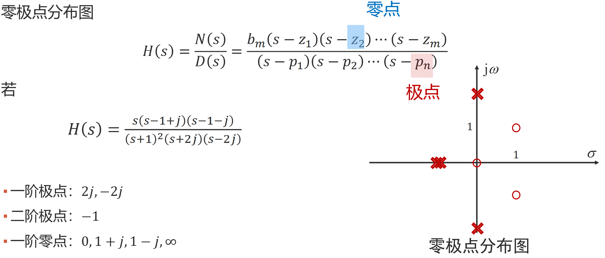
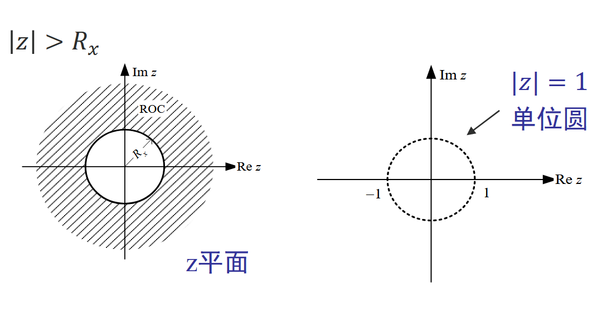
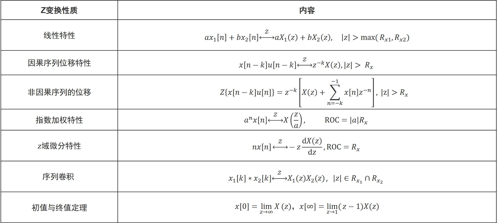
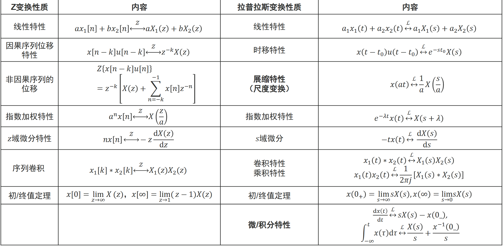
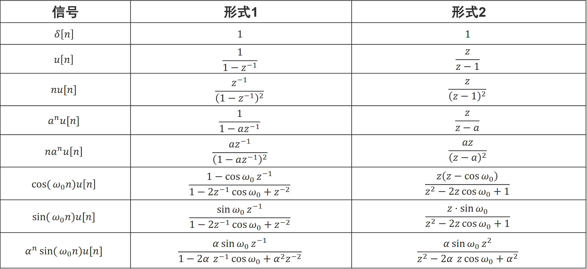

数字信号处理Part4
09 拉普拉斯变换及其应用
一、拉普拉斯变换
- 拉普拉斯变换（LT）/拉普拉斯反变换（逆变换）
- 拉普拉斯变换（LT）：X(s) = ℒ[x(t)] = ∫−∞∞x(t)e−stdt
- 拉普拉斯反变换：$x(t)=\mathcal{L}^{-1}[X(s)]=\frac{1}{2\pi j}\int_{\sigma-j\infty}^{\sigma+j\infty}X(s)e^{st}ds$
- 整体记为：$x(t)\overset{\mathcal{L}}{\leftrightarrow}X(s)$
- 信号 x(t) 可分解成复指数 est 的线性组合,不同信号只是复指数 est 前的系数 X(s) 不同。X(s) 是复频率 s 的函数，称复频谱。
- 从傅里叶变换到拉普拉斯变换：FT为实频域，将信号分解为等幅振荡的频率分量；LT将信号分解成幅度可变的复指数分量，针对复频域，物理含义不如FT，对信号的频谱分析还是要通过FT
- 单边拉普拉斯变换
单边拉普拉斯正变换：X(s) = ∫0−∞x(t)e−stdt
单边拉普拉斯反变换：$x(t)=\frac{1}{2\pi j}\int_{\sigma-j\infty}^{\sigma+j\infty}X(s)e^{st}ds$
积分下限定义为零的左极限 0−，目的在于s域分析时能够有效地处理出现在0时刻的冲激信号。
单边拉普拉斯变换存在的条件
充分条件为绝对可积：X(s) = ∫0−∞|x(t)|e−σtdt = C < ∞
对任意信号 x(t)，若 x(t) 满足上式，则 x(t) 应满足 $\lim\limits_{t\rightarrow\infty}x(t)e^{-\sigma t}=0;(\sigma>\sigma_0)$，其中
σ > σ0 称收敛条件，σ0 称绝对收敛坐标
有始有终、能量有限的信号(如冲激信号)，收敛区为整个s平面。有界非周期信号LT一定存在。
$\lim\limits_{t\rightarrow\infty}t^ne^{-\sigma t}=0;(\sigma>0)$，$\lim\limits_{t\rightarrow\infty}e^{at}e^{-\sigma t}=0;(\sigma>a)$
比指数增长的更快的函数，无法进行LT，如et2或tet2，仅在有限时间范围内LT存在。
二、拉普拉斯变换的计算
- 常用信号的拉普拉斯变换
$\mathcal{L}[e^{\lambda t}u(t)]=\int_{0_{-}}^{\infty}e^{\lambda t}e^{-st}dt=\frac{1}{s-\lambda},\space\sigma>\lambda$
同理可得：$e^{-\lambda t}u(t)\overset{\mathcal{L}}{\leftrightarrow}\frac{1}{s+\lambda},\space\sigma>-\lambda$
$e^{-j\omega_0 t}u(t)\overset{\mathcal{L}}{\leftrightarrow}\frac{1}{s+j\omega_0},\space\sigma>0$
$e^{(\sigma_0+j\omega_0)t}u(t)\overset{\mathcal{L}}{\leftrightarrow}\frac{1}{s-(\sigma_0+j\omega_0)},\space\sigma>\sigma_0$
冲激信号：$\mathcal{L}[\delta(t)]=\int_{0_{-}}^{\infty}\delta(t)e^{-st}dt=1,\space\sigma>-\infty$
冲激信号出现在 t = t0(t0 > 0) 处：$\mathcal{L}[\delta(t-t_0)]=\int_{0_{-}}^{\infty}\delta(t-t_0)e^{-st}dt=e^{-st_0},\space\sigma>-\infty$
阶跃函数 u(t)：$$\mathcal{L}[u(t)]=\int_{0_{-}}^{\infty}e^{-st}dt=\frac{1}{s},\space\sigma>0$$
三、（单边）拉普拉斯变换的性质
- 单边拉普拉斯变换的性质
线性特性：若 $x_1(t)\overset{\mathcal{L}}{\leftrightarrow}X_1(s),\sigma>\sigma_1;\quad x_2(t)\overset{\mathcal{L}}{\leftrightarrow}X_2(s),\sigma>\sigma_2$，则
$a_1x_1(t)+a_2x_2(t)\overset{\mathcal{L}}{\leftrightarrow}a_1X_1(s)+a_2X_2(s),\sigma>\max(\sigma_1,\sigma_2)$
应用线性特性计算正弦信号的单边拉普拉斯变换：$\cos\omega_0tu(t)\overset{\mathcal{L}}{\leftrightarrow}\frac{s}{s^2+\omega_0^2},\sigma>0;\quad\sin\omega_0tu(t)\overset{\mathcal{L}}{\leftrightarrow}\frac{\omega_0}{s^2+\omega_0^2},\sigma>0$
$\cos\omega_0tu(t)=\frac{e^{j\omega_0t}+e^{-j\omega_0t}}{2}u(t)\overset{\mathcal{L}}{\leftrightarrow}\frac{1}{2}(\frac{1}{s-j\omega_0}+\frac{1}{s+j\omega_0})=\frac{s}{s^2+\omega_0^2},\sigma>0$$\sin\omega_0tu(t)=\frac{e^{j\omega_0t}-e^{-j\omega_0t}}{2j}u(t)\overset{\mathcal{L}}{\leftrightarrow}\frac{1}{2j}(\frac{1}{s-j\omega_0}-\frac{1}{s+j\omega_0})=\frac{\omega_0}{s^2+\omega_0^2},\sigma>0$
展缩特性（尺度变换）：若 $x(t)\overset{\mathcal{L}}{\leftrightarrow}X(s),\sigma>\sigma_0$，则 $x(at)\overset{\mathcal{L}}{\leftrightarrow}\frac{1}{a}X(\frac{s}{a}),\sigma>a\sigma_0,a>0$
时移特性：若 $x(t)\overset{\mathcal{L}}{\leftrightarrow}X(s),\sigma>\sigma_0$，则 $x(t-t_0)u(t-t_0)\overset{\mathcal{L}}{\leftrightarrow}e^{-st_0}X(s),\sigma>\sigma_0,t_0>0$
单边周期信号x(t)可以表示为第一个周期信号x1(t)及其时移x1(t − kT)的线性组合，即 $x(t)=\sum\limits_{k=0}^{\infty}x_1(t-kT)$
若计算出x1(t)的拉普拉斯变换X1(s)，利用LT的时移特性和线性特性，即可求得单边周期信号的LT为
$\mathcal{L}[x(t)]=\sum\limits_{k=0}^{\infty}e^{-skT}X_1(s)=\frac{X_1(s)}{1-e^{-sT}},\sigma>0$
卷积特性：若 $x_1(t)\overset{\mathcal{L}}{\leftrightarrow}X_1(s),\sigma>\sigma_1;\quad x_2(t)\overset{\mathcal{L}}{\leftrightarrow}X_2(s),\sigma>\sigma_2$，则
$x_1(t)*x_2(t)\overset{\mathcal{L}}{\leftrightarrow}X_1(s)X_2(s),\sigma>\max(\sigma_1,\sigma_2)$
乘积特性：若 $x_1(t)\overset{\mathcal{L}}{\leftrightarrow}X_1(s),\sigma>\sigma_1;\quad x_2(t)\overset{\mathcal{L}}{\leftrightarrow}X_2(s),\sigma>\sigma_2$，则
$x_1(t)\cdot x_2(t)\overset{\mathcal{L}}{\leftrightarrow}\frac{1}{2\pi j}[X_1(s)*X_2(s)],\sigma>\sigma_1+\sigma_2$
指数加权（s域平移）：若 $x(t)\overset{\mathcal{L}}{\leftrightarrow}X(s),\sigma>\sigma_0$，则 $e^{-\lambda t}x(t)\overset{\mathcal{L}}{\leftrightarrow}X(s+\lambda),\sigma>\sigma_0-\lambda,\lambda>0$
线性加权（s域微分）：若 $x(t)\overset{\mathcal{L}}{\leftrightarrow}X(s),\sigma>\sigma_0$，则 $-tx(t)\overset{\mathcal{L}}{\leftrightarrow}\frac{dX(s)}{ds},\sigma>\sigma_0$
微分特性：若 $x(t)\overset{\mathcal{L}}{\leftrightarrow}X(s),\sigma>\sigma_0$，则 $\frac{dx(t)}{dt}\overset{\mathcal{L}}{\leftrightarrow}sX(s)-{\color{red}x(0_{-})},\sigma>\sigma_0$
- 若 x(0−) = 0，则 $\frac{dx(t)}{dt}\overset{\mathcal{L}}{\leftrightarrow}sX(s),\sigma>\sigma_0$
- 高阶拓展：$\frac{d^nx(t)}{dt^n}\overset{\mathcal{L}}{\leftrightarrow}s^nX(s)-\sum\limits_{r=0}^{n-1}s^{n-r-1}x^{(r)}(0_{-}),\sigma>\sigma_0$
积分特性：若 $x(t)\overset{\mathcal{L}}{\leftrightarrow}X(s),\sigma>\sigma_0$，则 $x^{-1}(t)=\int_{-\infty}^{t}x(\tau)d\tau\overset{\mathcal{L}}{\leftrightarrow}\frac{X(s)+{\color{red}x^{-1}(0_{-})}}{s},\sigma>\sigma_0$
- 若 x−1(0−) = 0，则 $\int_{-\infty}^{t}x(\tau)d\tau\overset{\mathcal{L}}{\leftrightarrow}\frac{X(s)}{s},\sigma>\sigma_0$
- 拉普拉斯变换与傅里叶变换的关系
当收敛域包含 jω 轴时（σ > −m, m > 0），拉普拉斯变换和傅里叶变换均存在
X(jω) = X(s)|s = jω
- 基于 $X(s)=\frac{s}{(s+4)^2},\sigma>-4$，求 X(jω)
- 收敛域 σ > −4 包含 jω 轴，$X(j\omega)=X(s)\big|_{s=j\omega}=\frac{j\omega}{(j\omega+4)^2}$
当收敛域不包含 jω 轴时（σ > m, m > 0），拉普拉斯变换存在而傅里叶变换不存在
当收敛域的收敛边界位于 jω 轴时（σ > 0），拉普拉斯变换和傅里叶变换均存在(Kn为系数)：
$X(j\omega)=X(s)\big|_{s=j\omega}+\pi\sum\limits_{n}K_n\delta(\omega-\omega_n)$
- 基于 $X(s)=\frac{1}{(s^2+9)s},\sigma>0$，求 X(jω)
- 收敛域的收敛边界位于 jω 轴，$X(s)=-\frac{1}{18}\frac{1}{s-3j}+-\frac{1}{18}\frac{1}{s+3j}+\frac{1}{9}\frac{1}{s}$
- $X(j\omega)=X(s)\big|_{s=j\omega}+\pi\sum\limits_{n}K_n\delta(\omega-\omega_n)=\frac{1}{j\omega(9-\omega^2)}-\frac{\pi}{18}[\delta(\omega-3)+\delta(\omega+3)]+\frac{\pi}{9}\delta(\omega)$
四、拉普拉斯反变换
- 部分分式展开法
对于LT的结果，一般可以表示为 $X(s)=\frac{N(s)}{D(s)}=\frac{b^ms^m+b_{m-1}s^{m-1}+\cdots+b_1s+b_0}{s^n+a_{n-1}s^{n-1}+\cdots+a_1s+a_0}=\frac{b_m(s-z_1)(s-z_2)\cdots(s-z_m)}{(s-p_1)(s-p_2)\cdots(s-p_n)}$，其中
zi 称为零点，pi 称为极点
X(s) 为有理真分式（m < n），极点为一阶极点（p1, p2, ⋯, pn互不相等）
$X(s)=\frac{N(s)}{D(s)}=\frac{N(s)}{(s-p_1)(s-p_2)\cdots(s-p_n)}=\frac{k_1}{s-p_1}+\frac{k_2}{s-p_2}+\cdots+\frac{k_n}{s-p_n}$
ki = (s − pi)X(s)|s = pi i = 1, 2, ⋯, n
x(t) = (k1ep1t + k2ep2t + ⋯ + knepnt)u(t)
X(s) 为有理假分式（m ≥ n）
$X(s)=\frac{N(s)}{D(s)}=B_0+B_1s+\cdots+B_{m-n}s^{m-n}+\frac{N_1(s)}{D(s)}$，$\frac{N_1(s)}{D(s)}$ 为真分式
利用以下结论辅助变换：$B_0\overset{\mathcal{L}}{\leftrightarrow}B_0\delta(t),B_1s\overset{\mathcal{L}}{\leftrightarrow}B_1\delta^{'}(t),B_{m-n}s^{m-n}\overset{\mathcal{L}}{\leftrightarrow}B_{m-n}\delta^{(m-n)}(t)$
X(s) 为有理真分式（m < n），极点为r重阶极点
$X(s)=\frac{N(s)}{D(s)}=\frac{N(s)}{(s-p_1)^r(s-p_{r+1})\cdots(s-p_{n})}=\frac{k_1}{(s-p_1)^r}+\frac{k_2}{(s-p_1)^{r-1}}+\cdots+\frac{k_r}{s-p_1}+\frac{k_{r+1}}{s-p_{r+1}}+\cdots+\frac{k_n}{s-p_n}$
$k_i=\frac{1}{(i-1)!}\frac{d^{i-1}}{ds^{i-1}}[(s-p_1)^rX(s)]\big|_{s=p_i}\quad i=1,2,\cdots,r$
$x(t)=[\sum\limits_{i=1}^{r}\frac{k_i}{(i-1)!}t^{i-1}e^{p_1t}]u(t)+\sum\limits_{i=r+1}^{n}k_ie^{p_it}u(t)$
$\mathcal{L}[\delta(t)]=1,\mathcal{L}[u[t]]=\frac{1}{s}$
$e^{-\lambda t}u(t)\overset{\mathcal{L}}{\leftrightarrow}\frac{1}{s+\lambda},\quad\cos\omega_0tu(t)\overset{\mathcal{L}}{\leftrightarrow}\frac{s}{s^2+\omega_0^2},\quad\sin\omega_0tu(t)\overset{\mathcal{L}}{\leftrightarrow}\frac{\omega_0}{s^2+\omega_0^2}$
五、微分方程描述系统的复频域分析
- 二阶系统响应的s域求解
微分方程：$\frac{d^2y(t)}{dt^2}+a_1\frac{dy(t)}{dt}+a_2y(t)=b_0\frac{d^2x(t)}{dt^2}+b_1\frac{dy(t)}{dt}+b_2$，已知 x(t), y(0−), y′(0−)，求 y(t)。
经拉氏变换将时域微分方程变换为s域代数方程
[s2Y(s) − sy(0−) − y′(0−)] + a1[sY(s) − y(0−)] + a2Y(s) = b0s2X(s) + b1sX(s) + b2
$Y(s)=\frac{sy(0_{-})+y^{'}(0_{-})+a_1y(0_{-})}{s^2+a_1s+a_2}+\frac{b_0s^2+b_1s+b_2}{s^2+a_1s+a_2}X(s)=Y_{zi}(s)+Y_{zs}(s)$
y(t) = yzi(t) + yzs(t) = ℒ−1[Yzi(s) + Yzs(s)]
- 系统函数
系统在零状态(起始条件为0)条件下，输出的LT与输入的LT之比，记为 H(s)。
$H(s)=\frac{\mathcal{L}[y_{zs(t)}]}{\mathcal{L}[x(t)]}=\frac{Y_{zs}(s)}{X(s)}$
H(s) 与 h(t) 的关系：yzs(t) = x(t) * h(t), H(s) = ℒ[x(t)], x(t) = ℒ−1[X(s)]
求零初始状态的理想积分器的系统函数 H(s)
- y(t) = ∫−∞tx(τ)dτ
- 两边取LT，可得：$Y(s)=\frac{1}{s}X(s)$
- 根据系统函数的定义可得：$H(s)=\frac{Y(s)}{X(s)}=\frac{1}{s}$
求零初始状态的理想微分器的系统函数 H(s)
$y(t)=\frac{dx(t)}{dt}$
由于 $h(t)=\frac{d\delta(t)}{dt}$
两边取LT，根据系统函数的定义可得：H(s) = sℒ[δ(t)] − δ(0−) = s
H(s) 的零极点分布与 h(t) 的波形特征相对应，在零极点分布图中，用 × 标出极点的位置，用 ∘ 标出零点的位置

系统函数与系统稳定性
- 连续时间LTI系统有界输入有界输出（BIBO）稳定的充分必要条件是：∫−∞∞|h(τ)|dτ = S < ∞
- 因果系统在s域有界输入有界输出(BIBO)的充要条件是系统函数H(s)的全部极点位于左半s平面
10 Z变换
一、Z变换的定义
- 拉普拉斯变换到Z变换
连续因果信号通过抽样得到离散信号：$x_s(t)=x(t)\cdot\delta_{T_s}(t)=\sum\limits_{n=0}^{\infty}x(nT_s)\delta(t-nT_s)$
两边同时取拉普拉斯变换，可得：
$X_s(s)=\int_{0_{-}}^{\infty}x_s(t)e^{-st}dt=\int_{0_{-}}^{\infty}[\sum\limits_{n=0}^{\infty}x(nT_s)\delta(t-nT_s)]e^{-st}dt=\sum\limits_{n=0}^{\infty}x(nTs)e^{-snT_s}$
令 $z=e^{sT_s},s=\frac{1}{T_s}\ln z$，得到 $X(z)=\sum\limits_{n=0}^{\infty}x(nT_s)z^{-n}$
设置 Ts = 1，因此 $X(z)=\sum\limits_{n=0}^{\infty}x[n]z^{-n},z=e^{s}$
- 单边Z变换
序列 x[n] 的单边Z变换定义为
$X(z)=\mathcal{Z}[x[n]]=\sum\limits_{n=0}^{\infty}x[n]z^{-n}=x[0]+\frac{x[1]}{z}+\frac{x[2]}{z^2}+\cdots$，X(z) 也被称为 x[n] 的生成函数
其中z为复数。离散信号的Z变换是z−1级数形式
Z变换过程表示为：$x[n]\overset{\mathcal{Z}}{\leftrightarrow}X(z)$
使上述级数收敛的所有z的范围称为X(z)的收敛域，一般右边序列的收敛域为z平面中的一圆外区域

常用单边序列的Z变换
常用单边序列 Z变换 收敛域 (ROC) 单位脉冲序列 𝒵{δ[n]} = 1 |z| ≥ 0 单位阶跃序列 $\mathcal{Z}\left\{u[n]\right\} = \sum\limits_{n=0}^\infty z^{-n} = \frac{1}{1-z^{-1}}$ |z| > 1 斜变序列 $\mathcal{Z}\left\{nu[n]\right\} = \sum\limits_{n=0}^\infty nz^{-n} = \frac{z^{-1}}{(1-z^{-1})^2}$ |z| > 1 指数序列 $\mathcal{Z}\left\{a^n u[n]\right\} = \sum\limits_{n=0}^\infty a^n z^{-n} = \frac{1}{1-az^{-1}}$ |z| > |a| 斜变指数序列 $\mathcal{Z}\left\{n a^n u[n]\right\} = \sum\limits_{n=0}^\infty n a^n z^{-n} = \frac{az^{-1}}{(1-az^{-1})^2} = \frac{az}{(z-a)^2}$ |z| > |a| 双边Z变换
- 双边Z变换：$X(z)=\mathcal{Z}\left\{x[n]\right\}=\sum\limits_{n=-\infty}^{\infty}x[n]z^{-n}$
- Z反变换：$x[n]=\mathcal{Z}^{-1}\left\{X(z)\right\}=\frac{1}{2\pi
j}\oint_{C}X(z)z^{n-1}dz$
- C 为 X(z) 的收敛域中一闭合曲线(包围X(z)zn − 1极点逆时针积分闭合曲线)
二、Z变换的性质
Z变换的性质

Z变换与拉普拉斯变换性质对比

三、Z反变换及其应用
常见信号的Z变换

二阶系统响应的z域求解
针对差分方程，已知初始状态为y[−1], y[−2]，求解
y[n] + a1y[n − 1] + a2y[n − 2] = b0x[n] + b1x[n − 1], n ≥ 0
对差分方程两边做Z变换，利用 𝒵{y[n − 1]u[n]} = z−1Y(z) + y[−1], 𝒵{y[n − 2]u[n]} = z−2Y(z) + y[−2] + y[−1]z−1 + y[−2]
可得：Y(z) + a1z−1Y(z) + a1y[−1] + a2z−2Y(z) + a2y[−2] + a2y[−1]z−1 = b0X(z) + b1z−1X(z)
整理 Y(z) 可得：$Y(z)=\frac{-a_1y[-1]-a_2y[-2]-a_2y[-1]z^{-1}}{1+a_1z^{-1}+a_2z^{-2}}+\frac{b_0+b_1z^{-1}}{1+a_1z^{-1}+a_2z^{-2}}X(z)=Y_{zi}(z)+Y_{zs}(z)$
综合可得：y[n] = 𝒵−1{Yzi(z) + Yzs(z)}
- 系统函数
- 系统在零状态条件下，输出的Z变换与输入的Z变换之比，记为 H(z)：$H(z)=\frac{\mathcal{Z}\left\{y_{zs}[n]\right\}}{\mathcal{Z}\left\{x[n]\right\}}=\frac{Y_{zs}(z)}{X(z)}$
- H(z) 与 h(n) 的关系：H(z) = 𝒵{h[n]}, h[n] = 𝒵−1{H(z)}
- 求单位延时器 y[n] = x[n − 1]
的系统函数 H(z)
- 设 $x[n]\overset{\mathcal{Z}}{\leftrightarrow}X(z)$，利用z变换的位移特性，有 $x[n-1]\overset{\mathcal{Z}}{\leftrightarrow}z^{-1}X(z)$
- 根据系统函数的定义，可得 $H(z)=\frac{Y_{zs}(z)}{X(z)}=\frac{z^{-1}X(z)}{X(z)}=z^{-1}$
- 离散系统的稳定性
- 离散LTI系统稳定的充要条件是 $\sum\limits_{n=-\infty}^{\infty}|h[n]|<\infty$
- 由 H(z)
判断系统的稳定性
- H(z) 的收敛域包含单位圆则系统稳定
- 因果系统的极点全在单位圆内则该系统稳定